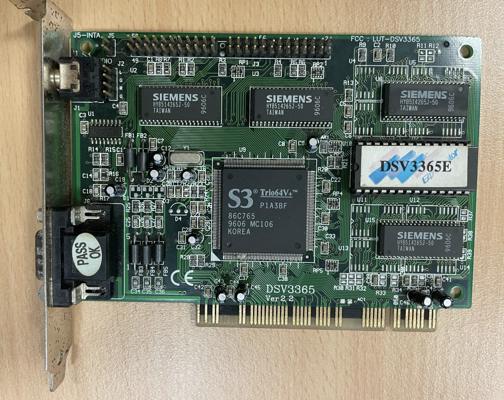

Understanding Multimodal Vision-Language Models
Imagine describing a painting to someone over the phone versus showing them the actual artwork. That is roughly the leap in AI capability over the past two years. Until 2023, systems like GPT-3 were brilliant with words but effectively blind; they could only "understand" an image if a human painstakingly described every detail in text. Today's leading systems (Claude, ChatGPT and Gemini) can take an image directly and analyse it, much as a person does.
This capability is called multimodal processing: understanding different types of information (images, text, potentially sound) at the same time, and seeing the connections between them. It marks a shift from systems that could only manipulate symbols to ones that perceive and interpret the world a little more like we do. This page looks at how vision-language models (VLMs) work, using a real case study: identifying and contextualising a vintage graphics card from the 1990s.
How Vision-Language Models Work
VLMs integrate computer vision and natural language processing. Rather than treating images and text as separate inputs, modern VLMs process them together in unified "embedding spaces" where visual and textual concepts share the same representational dimensions. When a VLM encounters the concept "memory chip", it is not stored as separate visual and linguistic entities; it is a single multimodal concept that captures both what a memory chip looks like and what it does.
The process runs in stages. First, visual feature extraction identifies shapes, colours, text and spatial relationships, with attention mechanisms that focus on specific regions while keeping the whole image in view. Next, cross-modal reasoning links that visual evidence to the model's knowledge: reading "S3 86C765" on a chip connects to stored technical knowledge about that chipset. Finally, the model generates a response that synthesises what it sees with what it knows, often inferring things not directly visible.
A real advantage of genuine multimodality is that visual evidence constrains what the model can say. When the AI can actually see that a chip reads "Siemens HYB514265J-50", it is far less likely to invent fictional specifications than a text-only system guessing from a description.
Case Study: Identifying Vintage Hardware
To see how different VLMs approach visual analysis, three leading models (Claude, GPT-o3 and Gemini Pro, as they stood in 2025) were each given an identical image of an S3 Trio64V+ ISA graphics card from the mid-1990s, and asked to identify the hardware and explain how it could be used in a lesson about Moore's Law.

The task is harder than it looks: it requires reading tiny text on multiple chips, understanding spatial relationships, recognising the significance of design choices like unpopulated memory sockets, and placing the technology in computing history. All three models correctly identified the core specifications (the S3 Trio64V+ chipset, designation 86C765; a 2MB EDO DRAM configuration across four Siemens chips; standard VGA output; and a 1995 to 1996 manufacturing window), but their approaches and added insights differed markedly.
How Each Model Approached the Task
Each VLM showed a distinct analytical strategy, which is useful when choosing a tool for a given job.
Claude
Worked from macroscopic pattern recognition down to granular detail, using the green solder mask and gold edge connector as temporal markers. Uniquely identified DataExpert as the board maker through FCC ID analysis, and deduced the 5V system voltage from visual cues. Strength: completeness and verification, best for historical preservation and attribution.
GPT-o3
Followed a traditional vision sequence from feature extraction to semantic analysis, keeping observation separate from interpretation. Excelled at practical, quantitative comparisons, calculating a 10,000-fold improvement in transistor density versus a modern GPU. Strength: pedagogical utility, best for clear teaching comparisons.
Gemini Pro
Absorbed the image as a multi-layered concept rather than a sequence, with exceptional technical depth: it calculated a memory bandwidth of 264 MB/s and explained how EDO DRAM's page mode achieved it, while weaving in period software context. Strength: integrated understanding and historical narrative.
Comparative Analysis Summary
| Capability | Claude | GPT-o3 | Gemini Pro |
|---|---|---|---|
| Core identification | Accurate | Accurate | Accurate |
| Manufacturing detail | Excellent (FCC ID) | Good | Good |
| Technical depth | High | Moderate | Exceptional |
| Historical context | Moderate | Technical focus | Rich narrative |
| Pedagogical utility | Good | Excellent | Very good |
| Processing approach | Sequential, forensic | Hybrid pipeline | Holistic integration |
The point is not that one model is best, but that each has a character: pick the tool that fits the task.
The AI Vision Revolution (2023 to 2025)
The move from text-only language models to multimodal vision-language models is one of the most significant shifts in recent AI. Before 2023, systems like GPT-3 lived in a purely symbolic world: all understanding was mediated through language. To use GPT-3 for hardware identification, a human had to translate visual information into text, losing crucial detail, and the model had no way to ground its words in physical reality, so it could generate plausible but entirely fictional specifications with no internal check.
- Pre-2023. Text-only models (GPT-3 and similar): brilliant with words, blind to images.
- 2023. First commercial multimodal models emerge (GPT-4V, Claude with vision).
- 2024. Native multimodality becomes standard; unified embedding spaces enable cross-modal reasoning.
- 2025. Chain-of-thought visual reasoning enables complex technical analysis.
The breakthrough was unified embedding spaces, where visual and textual information coexist in shared dimensions, and attention mechanisms that span modalities. Modern transformers attend to image regions and text tokens at once, so linguistic context shapes visual interpretation while visual evidence constrains what is generated. Visual instruction tuning then taught models not just to caption images but to follow complex analytical instructions about them, and chain-of-thought prompting let them articulate their visual reasoning the way a human expert would.
Educational Applications
The ability to turn a physical artefact into a rich teaching resource changes how technical history can be taught. A single vintage graphics card becomes a multifaceted tool.
Enhanced learning materials
Each component becomes a teaching moment and each design decision a window into the engineering of the period. For Moore's Law, a VLM can instantly place a 30-year-old card within the broader story of progress; GPT-o3's 10,000-fold transistor-density figure turns an abstract principle into something measurable.
Accessibility
Because different learners process information differently, a VLM can explain the same card through mathematical specifications for quantitative thinkers, historical narrative for contextual learners, or systematic decomposition for analytical minds, so technical education need not privilege one cognitive style.
Knowledge preservation
As the engineers who designed 1990s hardware retire and original documentation degrades, extracting and preserving technical insight from physical artefacts helps maintain technological heritage. VLMs can help museums, universities and archives draw out the pedagogical value in their collections.
Try It Yourself
Hardware archaeology. Find an old device, photograph it clearly, and ask different models to identify it and explain its significance. Compare their approaches.
Chain-of-thought exploration. After uploading an image, ask the AI to "explain your reasoning step by step" to see how it decomposes the task.
Cross-model comparison. Submit the same image to Claude, ChatGPT and Gemini with identical prompts, and note the differences in detail, focus and style.
VLMs can still misread text, misidentify components, or generate plausible but incorrect technical detail. Always verify critical information through additional sources, especially for professional or academic work.